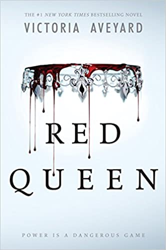

BETWEEN
THE
LINES
The world belongs to those who read.
The world belongs to those who read.
Book Club opened in July 2020 and serves as a community hub of the Upper West Side: a new kind of independent bookstore featuring top-notch coffee, wine, and gin. This spirited and dynamic neighborhood is reflected in the store: from the cozy living room-feel decor, to curated book inventory, locally roasted coffee, and NY state wine. Come hang out with us!
| Book | Author | Event | Date |
|---|---|---|---|
|  | Victoria Aveyard | This event is free and open to the public. To join the signing line and have any books signed at this event, you must purchase a copy of either King's Cage or Rise of Fire from Parnassus Books, either in-store, over the phone, or online. Your purchase will include a ticket that will admit you into the signing line at the event. By purchasing a book from Parnassus, you are not only supporting a locally owned, independent business, but you are also showing publishers that they should continue sending authors to Parnassus. Think about it this way: You wouldn't bring your own biscuits to the Loveless Cafe, would you? | September 27th, 2020 |
 |
Sarah Gailey | When a gruesome murder is discovered at The Osthorne Academy of Young Mages, where her estranged twin sister teaches Theoretical Magic, reluctant detective Ivy Gamble is pulled into the world of untold power and dangerous secrets. She will have to find a murderer and reclaim her sister—without losing herself. | October 14, 2020 |
| Erika L. Sanchez | The Absolutely True Diary of a Part-Time Indian meets Jane the Virgin in this poignant but often laugh-out-loud funny contemporary YA about losing a sister and finding yourself amid the pressures, expectations, and stereotypes of growing up in a Mexican American home. | November 24, 2020 |